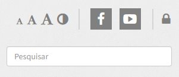

ORIENTAÇÕES PARA ALUNOS INGRESSANTES NO 1° ANO DO ENSINO MÉDIO INTEGRADO 2023
12 a 23 de dezembro de 2022: 7h00 às 19h00 26 a 30 de dezembro de 2022: plantão por meio do
email: depe.concordia@ifc.edu.br ou telefone: 3441 4821 02 de janeiro a 03 de fevereiro de
2023: 7h00 às 19h00